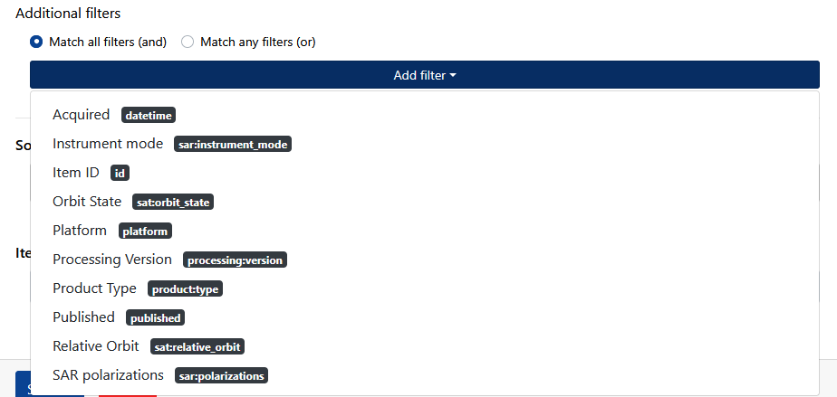

New STAC product catalogue
The new prototype of the SpatioTemporal Asset Catalogue (STAC) of the Copernicus Data Space Ecosystem (CDSE) has been implemented to foster discoverability and management of Earth Observation (EO) data. Its goal is to standardize metadata model to increase interoperability and applicability of the spatio-temporal datasets. The catalogue implements the new STAC specification of version 1.1. It is important to note that the new STAC catalogue does not replace the existing CDSE Open Data Protocol (Odata) catalogue but serves as a complementary resource, expanding data discovery and accessibility options. It includes a limited set of data collections but more will be included in the upcoming months and further optimizations of its performance and stability will be performed.
Endpoint URL
The new Copernicus Data Space Ecosystem STAC Catalog can be accessed using the following URL:
CDSE STAC Browser
CDSE STAC Browser serves as a Graphical User Interface (GUI) to explore, filter, and preview EO products along with their comprehensive set of attributes. It uses standardized JSON API responses to offer an intuitive interface, allowing users to easily navigate and interact with the STAC catalogue. The source code of the CDSE STAC Browser in available on the GitHub.
The latest Copernicus Data Space Ecosystem STAC API Browser can be accessed using the following URL:
The STAC Browser window is divided into two main parts:
- Copernicus Data Space Ecosystem (CDSE) - STAC API Header: With an interactive navigation bar
- Main Page: Organized into sections that include a platform description, additional resource links, and a catalog section for browsing datasets.
The navigation bar includes several options that facilitate easy exploration and interaction with the STAC Browser:
- Interactive features:
- Browse: To navigate through available collections
- Search: Redirects to the
/searchendpoint, allowing users to search within the data catalog - Log in: Redirects to the CDSE login page, allowing users to authenticate or register a new account
- Links and Information:
- API
- Source
- Share
- Language Selection
- Logos: Redirects to the Copernicus Data Space Ecosystem.
The main page is divided into three sections:
- Description
- Additional Resources: Links to the OPEN API service documentation and description
- Catalogs
This section presents the available catalogs (with the number displayed next to the section title), offering options to view them as tiles or a list. Users can sort them in ascending or descending order by collection name. Two sidebars are available: one allows filtering catalogs by title, description, or keywords, and the other provides a list of pre-defined keywords to select from.
After selecting a desired collection, users are redirected to its dedicated STAC Browser page, for example Sentinel-1 Ground Range Detected (GRD)
The page is divided into two main sections below the header.
On the left side, there is a collection description along with keywords, license information, and temporal extent. Below this, an interactive map displays the geographical location of the items currently shown on the page, as well as the collections spatial extent. Further down, additional information is presented in the following order: Assets, Providers, and Metadata, which is divided into more detailed sections such as general, SAR, cloud storage, processing, product, satellite, etc. These sections may vary depending on the collection.
On the right side, there is an Items section displaying the currently filtered products. By clicking on a selected product, users can navigate to its dedicated endpoint. Next to the pagination bar, which allows users to browse through product pages, there is a toolbar that enables the display of available filtering options.
After clicking the Show Filters button, a panel expands, allowing the user to define the desired filters.
The user can define the desired time range
The user can use the interactive map to specify the spatial extent.

The user can select the filtering type (AND or OR) and then add the desired filters, which vary depending on the collection. Filters available for another collection - Sentinel-2 Level-2A:
In the final step, the user can set the limit of displayed items per page, with a default value of 12.
Below the section displaying the Items, there is a section containing information about the Assets in Items.
In the following example, we will apply filtering within the Sentinel-2 Level-2A collection, using a time filter, a spatial filter, and an additional filter. We will select products within the date range from July 1st to August 31st, 2024, define the geospatial extent on the map, and set the cloud cover filter to less than or equal to 10%:
After clicking the Submit button, a list of products matching the selected filters is returned. As mentioned earlier, by clicking on a selected product, the user will be redirected to its dedicated page.
The layout of the selected product page is structured in a similar way. On the left side, an interactive map is displayed, showing its geospatial location, with Asset information below it. On the right side, the collection description is provided, including a link that redirects to the Collection. Below that, the dedicated Item metadata is displayed in a separate section.
Available Collections
Currently, a limited number of collections are available, and these will be expanded over time. The following collections from Copernicus Sentinel Mission or Complementary Data are currently available via new STAC API:
- Sentinel-1 Ground Range Detected (GRD)
- Sentinel-2 Global Mosaics
- Sentinel-2 Level-1C (currently updated with historical data i.e. before 2025)
- Sentinel-2 Level-2A
The following collections will be added in the following chronological order:
- February 2025 - Sentinel-1 Single Look Complex (SLC)
- March 2025 - Sentinel-5P products
- March/Apri 2025 - Sentinel-3 products
STAC Collections Search
STAC Collections endpoint lets users get information about collections available in the CDSE catalogue.
To access the information about all STAC API Collections:
To access the information about a specified STAC API Collection (e.g. SENTINEL-2 Level-2A):
STAC API Extensions
The STAC API extensions adds additional functionalities to the STAC core API. Currentyl CDSE STAC API support the following exentions:
filterqueryfieldssortfree-text searchfor the /Collection endpoint only
Filter Extension
The Filter Extension provides an expressive mechanism for searching based on Items attributes. It offers more flexibility compared to the [link query extension] and utilizes the standardized CQL2 query language. Users can apply various operators such as spatial, temporal, and attribute comparisons. The extension enhances search capabilities by allowing complex queries through GET and POST methods, using both text and JSON formats.
The implementation supports these conformance classes:
- Queryables mechanism along with filter parameters:
filter-lang,filter-crsandfilter - BASIC CQL2 which includes logical operators (
AND,OR,NOT), comparison operators (=,<>,<,<=,>,>=), andisNull. The comparison operators are allowed for string, numeric, boolean, date, and datetime types. - Item Search Filter applied to the Item Search endpoint
/search - Basic spatial operators (
S_INTERSECTS).
Two CQL2 formats supported by Item Search can be used in the filter parameter:
- CQL2 Text - recommended for GET requests (note that filter-lang defaults to cql2-text in this case)
- CQL2 JSON - recommended and supported for POST requests (note that filter-lang defaults to cql2-json in this case).
Queryables
Queryables are terms that can be used in filter expressions to search through a catalog or collection. They are defined globally for the entire catalog and individually for each collection.
Following endpoints have been added to allow users to check for available parameters when writing filter expressions.
To access queryable attributes for STAC API Item Search filter across the entire catalogue:
To check available queryable attributes for collections:
Examples
For POST method requests, the query should be included in the request body and sent to the following endpoint:
https://stac.dataspace.copernicus.eu/v1/search
{
"filter": {
"op": "and",
"args": [
{
"op": "=",
"args": [
{
"property": "collection"
},
"sentinel-2-l2a"
]
},
{
"op": "<=",
"args": [
{
"property": "eo:cloud_cover"
},
10
]
},
{
"op": ">=",
"args": [
{
"property": "datetime"
},
{
"timestamp": "2021-04-08T04:39:23Z"
}
]
},
{
"op": "s_intersects",
"args": [
{
"property": "geometry"
},
{
"type": "Polygon",
"coordinates": [
[
[
43.5845,
-79.5442
],
[
43.6079,
-79.4893
],
[
43.5677,
-79.4632
],
[
43.6129,
-79.3925
],
[
43.6223,
-79.3238
],
[
43.6576,
-79.3163
],
[
43.7945,
-79.1178
],
[
43.8144,
-79.1542
],
[
43.8555,
-79.1714
],
[
43.7509,
-79.6390
],
[
43.5845,
-79.5442
]
]
]
}
]
}
]
}
}Query Extension
The Query Extension introduces a query parameter that enables additional filtering based on the properties of Item objects.
The supported operators include: eq (Equal to), neq (Not equal to), lt (Less than), lte (Less than or equal to), gt (Greater than), gte (Greater than or equal to).
For example, to search for Sentinel-2 Level-2A Items with cloud cover less than 15%, users can use either a GET or a POST request, as shown in the examples below.
For POST method requests, the query should be included in the request body and sent to the following endpoint:
https://stac.dataspace.copernicus.eu/v1/search
{
"collections": [
"sentinel-2-l2a"
],
"query": {
"eo:cloud_cover": {
"lt": 15
}
}
}Fields Extension
The Fields Extension allows users to request specific set of attributes to be included or excluded from the search responses. This allows optimizing query performance by reducing unnecessary data, especially when dealing with large or complex Item objects. It can be used in both GET and POST requests, with the fields parameter enabling the specification of fields to include or exclude. In GET requests, you can specify fields to exclude by prefixing them with a hyphen (e.g., -geometry).
For POST method requests, the query should be included in the request body and sent to the following endpoint:
https://stac.dataspace.copernicus.eu/v1/search
{
"collections": [
"sentinel-2-l2a"
],
"filter": {
"op": "lt",
"args": [
{
"property": "eo:cloud_cover"
},
15
]
},
"fields": {
"exclude": [
"geometry"
]
}
}Sort Extension
The Sort Extension allows users to define sorting criteria for search results using the sortby parameter. Sorting can be applied to string, numeric, and datetime fields from an Item or its properties. Fields can be sorted in ascending or descending order and are specified as a comma-separated list in GET requests or as an array in POST requests. In GET requests, sorting prefixes may be applied to specify the order of results: + denotes ascending order (default), while - indicates descending order.
For POST method requests, the query should be included in the request body and sent to the following endpoint:
https://stac.dataspace.copernicus.eu/v1/search
{
"collections": [
"sentinel-2-l2a"
],
"filter": {
"op": "and",
"args": [
{
"op": "<",
"args": [
{
"property": "eo:cloud_cover"
},
15
]
},
{
"op": "eq",
"args": [
{
"property": "datetime"
},
"2025-01-25T00:00:00.000Z"
]
}
]
},
"sortby": [
{
"field": "properties.eo:snow_cover",
"direction": "asc"
}
]
}Free-text Search Extension
The Free-text Search Extension enables users to conduct keyword-based searches on Item properties by utilizing the q parameter. This facilitates efficient searching across text fields, including titles, descriptions, and keywords on the /collections endpoint only. The extension is not supported for the Item search.
Jupyter Notebook Examples
In order to support the CDSE users with utilization of the new CDSE STAC API, a set of Jupyter Notebooks has been prepared.